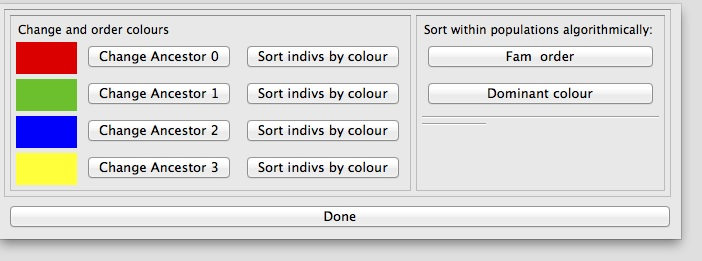
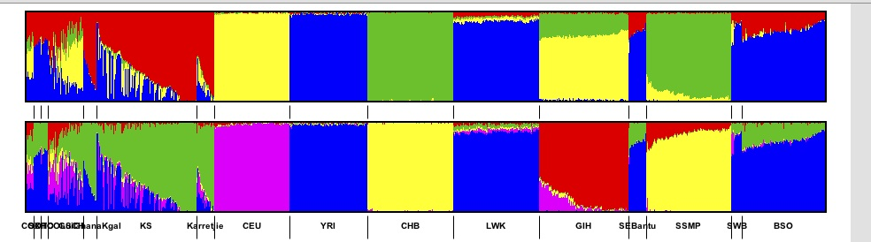

3 Structure Plots
3.1 Data input format
Genesis requires two input files and an optional third file:
- An admixture file which contains on each line the
estimated ancestral proportions of each individual. Typically, this
would be produced by a program like Admixture (e.g, and admixture Q
file), or CLUMPP, the output formats of which Genesis supports
natively. For example, an Admixture Q file for K=4, contains four
columns. Provided the input is a legal format,
Genesis will
automatically work out what input file it is, and what the K
value is. Instructions on using the structure2CLUMPP script which
can be used for Structure input files is described later.
- A plink-style fam file. The first two columns must uniquely
identify the individuals (the first column is usually the family
identifier, the second the individual identifier). See the plink manual
for further description. The j-th line
of this fam file describes the j-th individual in the admixture
file. This all that
Genesis requires, although fam files
typically have other columns as well.
- Optionally, a phenotype file: again, the first two columns
indentify the individual, and subsequent columns label the individuals
(e.g., case/control, male/female, population group, language, etc). The
individual identifiers should be the same as in the fam file: each
individual in the fam file should also be in the phentoype file, but
there is no problem in having individuals in the phenotype file who are
not in the fam file. The order of entries in the phenotype file need not
be the same as in the fam file. You could use the same file as the fam
and the phenotype file.
3.2 Inputting Data
Genesis produces structure charts by taking input from
Admixture or CLUMPP tools, together with a PLINK-style fam and
optionally a phenotype file which would contain population labels.
To input these files, click File click New Admixture or the
New Admixture button on the toolbar. On the screen that opens,
click Import Data File and navigate to the admixture data file
outputted by the Admixture/CLUMPP tools. Then click Import Fam
File and navigate to the fam data file. Finally, click Import
Pheno File and navigate to the phenotype data file.
You can import multiple data files into the same project by clicking
Import Data File again. These files can be imported in any order
relative to the importing of the fam and pheno file.
In the drop-down menu select the column of the phenotype file that will
be used to group the data. To draw the graph, click Finish or
click Next to access the Appearance Options menu (See below...).
Editing Phenotype Column/Importing Additional Data Files
If a graph has already been plotted, and you wish to change the column of the phenotype data used to group the data or import additional data files, you can access the initial menu by clicking the Data Options button on the toolbar, or clicking Graph click Data Options.
3.3 Appearance Options
The Appearance Options menu can be accessed through the New
Admixture button by clicking Next after importing the files or
by clicking the Appearance Options button on the toolbar, or
clicking Graph click Appearance Options.
- Heading
To set/change the heading, open the Appearance Options menu and type the heading into the text box that says “Set Heading.” To change the font of the heading, click Select Heading Font and select the font of choice.
- Border
To show/hide the border open the Appearance Options menu and (un)check the Show Border checkbox.
- Population Group Labels
To show/hide the population group labels, open the Appearance Options menu and (un)check the Show Population Group Labels checkbox. To change the font of the population group labels, click Select Population Group Label Font and select the font of choice.
- Graph Size and Spacing
To change the size and spacing of a structure plot, open the Appearance Options menu and select values for the Set Graph Height, Set Thickness of Each Subject and Set Distance Between Graphs boxes.
- Horizontal/Vertical Orientation
To set the orientation of the structure plot, and select Horizontal or Vertical from the bottom drop down menu.
3.4 Interacting with the Graph
Other settings and options can be changed by interacting with the graph. Certain elements can be clicked to view or modify their options.
- Selecting Subjects
To select an individual subject on the structure plot, click on the subject on the plot. This will bring up a subject menu where you can view the data about the subject (from the phenotype data file) and gives the option to hide the subject from the plot.
- Population Group Name and Order
To select a population group, click on the population group label for the group. This will bring up a menu where you can change the Name of the group and also shift the group left/right (or up/down) in the graph.
- Changing the colours and order of colours and individuals
This option allows you to
- change colours (e.g., change red to blue)
- change the order of the colours (e.g., on a horizontal chart, move
the red segments from below the blue segments to above the red segments
- order the individuals within a population group by an ancestral group.
Right click anywhere on a graph and select Population Group
Options.
The menu below shows

From the next menu, click the button next to the colour you wish to
change and from the next dialog, click the Change \ldots button
to change the colour or the Shift Up and Shift Down
buttons (or the Shift Left and Shift Right buttons) to
change the order of the colours (i.e., on a horizonal graph, moving
colours up and down; on a vertical graph moving them left and right).
Clicking on a “Sort indivs by colour” button, will sort the
individuals in each population group in order (left to right on a
horizontal graph; top to bottom on vertical graph) so that the
individual with the least ancestry represented by that colour is first,
and the one with the greatest is last.
For example if we have
and click on the Sort indivs next to the blue colour then we get.
Clicking on “Dominant colour” orders each population group in a
similar way, but instead of sorting each population group on the same
colour, Genesis will compute the dominant ancestral component for that
group and then order the individuals in that population group by that
component.
The Fam order option is essentially an undo: the individuals are
displayed in the relative order that they appear in the fam file.
The ordering of individuals
by component is not strict. If two individuals have a very similar but
not equal primary component, then a secondary component is used (this
is more likely to lead to put similar individuals close to each other).
Note that these options are being refined and behaviour may change.
- Recolouring a graph based on another graph
A common use case is to have structure charts for multiple values of
K. When multiple graphs are imported some of the most glaring
apparent differences will not be due to different numbers of colours but
by arbitrary choices of which colours were used. Even though different
values of K are used, typically a column from one value of
K will correspond to a column from another value of
K. However, since the order of the columns is arbitrary the
colours are arbitrary. Genesis has an option which tries to match the
colours of of one graph with respect to another graph.
For example a common case might be someting like:

To recolour a graph, right click anywhere on a graph and select Population Group
Options and choose either Colour this graph similar to next or
Colour this graph similar to previous (these options only appear
if it makes sense). Genesis will recolour.
For example a common case might be someting like:
Note that this option does not guarantee to recolour optimally. Rather
it is intended to reduce the load on the user by making sensible choices
for obvious colouring. (Indeed it is not clear what “optimal” means,
or best to do colouring. For example, if a “yellow” colour splits into
“yellow” and “magenta” which new component should be yellow and
which magenta may require insight into populatio dynamics). A very
simple heuristic is currently used, which works well in
practice. However, this will improve in time.
- Searching for a Subject
To search for a subject in the graph by name, click the Search for individual button in the toolbar. In the dialog, enter the Name (first, last or both) of the individual you wish to find and click Ok. If the individual was found in the data, it will be selected and the subject dialog for that individual will open. If the individual was not found, a message will displayed.
3.5 Annotating the Graph
- Creating a Label
To create a label and annotate the graph, right click on the graph where the label is to be placed, and click Create Label at Mouse Pointer. Then enter the label's text and click OK to place the label.
- Editing or Deleting a Label
To reposition a label, click on it and drag to where it should go. If
you press the shift key while dragging the label there is a snap to
grid feasture. To edit a label that has been created, click on the
label to bring up the Label dialog. From this dialog you can edit the
label's text, reposition the label or delete the label.
- Hiding individuals
To hide a subject from the graph, click on the subject on the graph to bring up the subject dialog. From this menu you can choose to hide the subject from the graph.
- Hiding Groups
To hide a population group from the graph, click on the group in the key to bring up the population group dialog and check the box labelled Hide this group from the graph.
- Showing Hidden Subjects and groups
To reshow a subject that has been hidden, click on the Select Hidden Individuals or Groups button and from the drop down menu that pops up, select the name of the subject or group that you wish to show. From the subject dialog you can now uncheck the Hide this Individual from the Graph or Hide this group from the Graph checkbox.
- Drawing lines and arrows
Genesis provides very simple functionality for adding lines and
arrows. Click on the icon and the place the line or arrow by (a)
clicking on the point where the line/arrow should start, (b)
dragging to the point where the line should finish, and (c)
releasing the mouse. If you press the shift key down at the same
time, then only vertical or horizontal lines can be produced.
Lines and arrows can be deleted or moved – if you press the shift key down at
the same time as moving there is a “snap to grid” feature. Note that
lines cannot be shortened or lengthened, and nor can the orientation change.
3.6 Useful scripts
3.6.1 structure2CLUMPP: Wrapper script for the Structure tool
Genesis supports Admixture Q files and CLUMPP output files
natively. CLUMPP's output format is a derivative of the Structure tool's
output. (Thus our naming convention is somewhat inaccurate, since CLUMPP
format is really a sub-part of the Structure format). When Structure
runs, it produces log information, summary information about the
population and the inferred ancestry of individuals. This inferred
ancestry is what we want and can be found in the middle of the output
file.
The script structure2CLUMPP takes one mandatory argument, the
file name of a structure output file.
python structure2CLUMPP testdata1.out_f
By default, output is placed on standard output. The --outbase flag
can be used to set the base of the output name. The script appends to
this base the suffix K.Q, where K is the number of columns
in the ancestry file (so as to be consistent with admixture).
python structure2CLUMPP --outbase data testdata1.out_f
If there are 4 columns in the file testdata1.out_f, then this will
produce a file data.4.Q.
The script also has a flag --produce-fam which can be used to
produce a bare bones fam file if needed.
The full usage is
usage: structure2CLUMPP [-h] [--outbase OUTBASE] [--produce-fam FAM_NAME] N
produce admixture style output from structure output
positional arguments:
N structure file
optional arguments:
-h, --help show this help message and exit
--outbase OUTBASE output file name base (default output to standard out)
--produce-fam FAM_NAME
produce fam file
Technical details.
The output of the structure program contains various information,
including log and FST data. Immediately after the lines that start
Inferred ancestry of individuals:
Label (%Miss) Pop: Inferred clusters
follow the inferred ancestry of each individual followed by blank
line. This is what we want. An extract might look something like this:
7 7 (0) 1 : 0.017 0.014 0.970
8 8 (0) 1 : 0.009 0.005 0.986
9 9 (0) 1 : 0.353 0.116 0.531
Here K=3, and the ancestry of each individual can be found to the
right of the colon (for our purposes we can ignore what's to the left of
the colon). The structure2CLUMPP script extracts out this part
of the output from the structure program and produces output
which could be output from CLUMPP. The Genesis program can read
this input.
3.6.2 sortfamQwithin.py — ordering invididuals by colour
Although Genesis directly supports some ordering by individuals, we have
a script that has more sophisticated functionality. In time this will be
migrated into Genesis.
Usually individuals are ordered in the fam file by group, but within the
group the ordering is arbitrary. In admixed populations this may lead to
confusing pictures because individuals who are adjacent to each other
may have different admixtures so one gets a very jagged chart where a
pattern is hard to discern. The script sortfamQwithin.py
consistently sorts a fam and Q file(s) so that within each group, the
individuals are sorted by the dominant ancestral population for that
group. This script is documented here:
http://www.bioinf.wits.ac.za/software/poputils/
3.6.3 Other scripts
There are other useful scripts like fams2phe and popifyfam.py
which can be used to create phenotype files in http://www.bioinf.wits.ac.za/software/poputils/